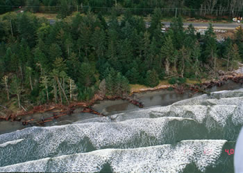
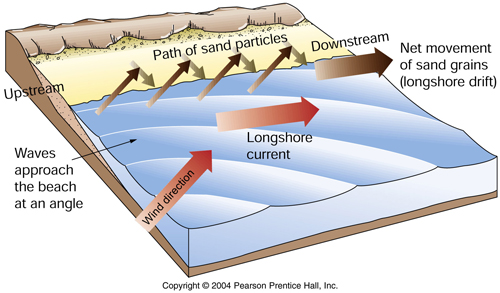
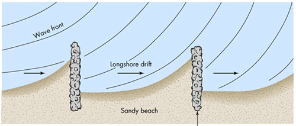
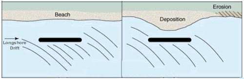

|
Erosion / Deposition Basics
Shorelines are under constant attack by waves, winds, and currents. The pounding
force of waves, especially during storms, can be a powerful agent
of mechanical weathering. The wave action can break, loosen, and
abrade the shoreline materials. Currents do the work of erosion,
transporting the broken materials away and depositing them in
new locations.
These forces, working together, can have either a destructive
or constructive effect on the shoreline. The destructive effect
can be rapid and dramatic when the shoreline material is a sediment,
such as sand, and much slower when the shoreline material is a
durable bedrock. However, no natural material can completely resist
the sustained attack of the waves and currents. |
|

Washington shoreline under light wave attack.
Photo: USGS Coastal & Marine Geology Program. |
The Carrying Capacity of Water: Velocity, Erosion, and Deposition
A person interested in determining how a shoreline will respond to waves
and currents needs to understand just one basic principle. This key
principle is the relationship between current velocity and erosion.
It can be stated as follows...
| Moving water will always attempt to carry as much sediment as its velocity allows. |
This principle can be illustrated with a simple example. Imagine a jar of
still water with sediment (mud, sand, and small pebbles) on the bottom.
If you insert a spoon and stir the water slowly some of the smaller
sediment particles (the muds) will be picked up and carried by the moving
water. If you stir faster the water velocity will increase and more
mud will be picked up by the swirling waters. In addition, some of the
sand grains will also be set into motion. If the speed of stirring is
further increased then even more sand and mud will be picked up and
carried and, if the speed is great enough, some of the small pebbles
will be carried along too. This example demonstrates how faster currents
have the ability to carry a larger volume of sediment and larger sediment
particles than slower currents.
Returning to our experiment. If the stirring is stopped the velocity of the water
will begin to slow. This reduction in velocity will cause the pebbles
to drop out of transport, followed by the sand grains and finally followed
by the mud particles. This reduction in sediment load as the currents
slow demonstrates how deposition occurs. This experiment clearly shows
that water will carry as much sediment as its velocity allows.
Two different erosion/deposition situations are possible. Both of these
can be easily understood based upon the key principles of deposition
and erosion explained above.
1) an increase in current velocity can cause erosion
2) a decrease in current velocity can cause deposition |
|
Longshore Current
The longshore current is a primary agent of shoreline erosion and
deposition. Waves produced by sustained winds are driven up the
beach at an angle to the shoreline. However, when the wave washes
back down the beach it travels perpendicular to the shoreline.
This results in a net movement of water along the beach known
as the longshore current. Sand grains are transported in a similar
pattern and the resulting sediment movement is known as longshore
drift. |
|

Wind-produced waves strike the coast at an angle but produce a longshore current
that moves and carries sand parallel to the shoreline. The longshore
current can erode or it can deposit. |
|
Case Study:
Groin Construction
In areas where the longshore current is eroding, groins (rock or
concrete structures built perpendicular to the shoreline) are
sometimes built to slow the longshore current. The decreased current
velocity on the up-current side of a groin results in deposition.
However, as soon as the water moves past the groin it accelerates
and immediately begins to erode the same amount of sediment that
was dropped. Building groins to control an erosion problem usually
just moves that problem a short distance down the beach. |
|

Groins trapping sediment on their upcurrent side.
If the groins are close enough together the net result will be
a growth in the width of the beach. However, if they are far apart
then erosion will take place between the groins.
Map and Aerial Photo of Groins - Beach Haven, NJ |
|
Case Study: Breakwaters
Breakwaters (rock or concrete structures built parallel to a beach and a short
distance offshore) are sometimes built to protect a beach from
waves or to provide a protected harbor for boats. Deposition usually
occurs immediately behind a breakwater because it blocks the incoming
waves, disrupting the longshore current. However, as soon as the
longshore current moves beyond the breakwater it picks up velocity
and erodes the same amount of sand that was dropped. Again, erosion
was prevented in one area but increased in another. |
|

Breakwaters cause deposition by blocking waves and creating an area of still
water between them and the shore. As the water moves downcurrent
from the breakwater it erodes the same amount of sediment that
was dropped.
Photo of Breakwaters at Presque Isle, Pennsylvania from (U.S.
Army Corps of Engineers)
|
|

{kind=link}